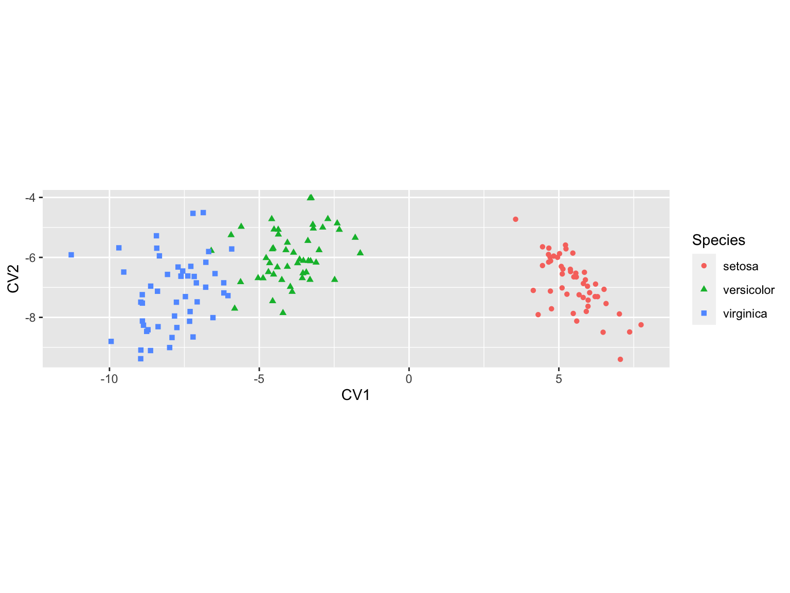
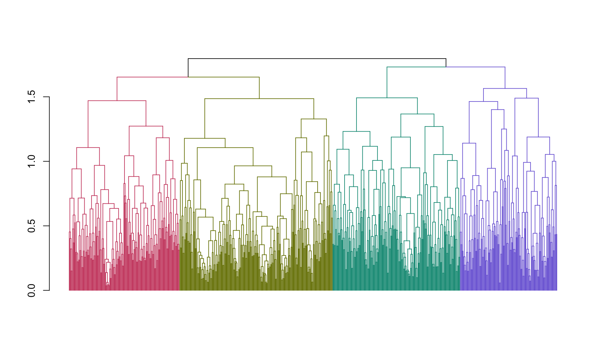
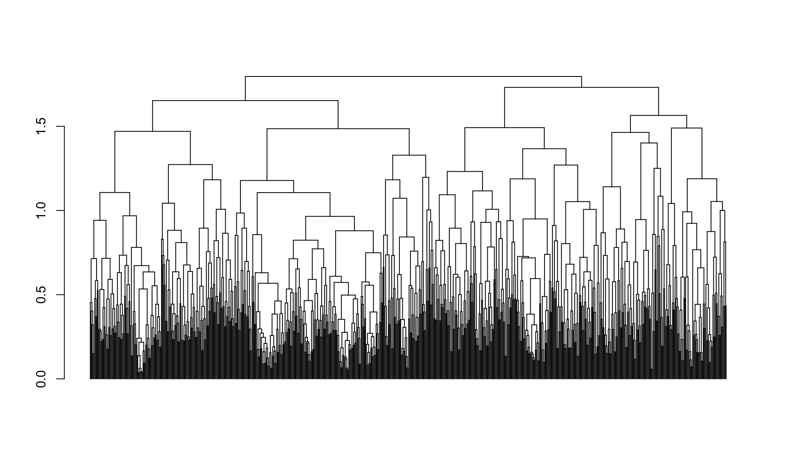
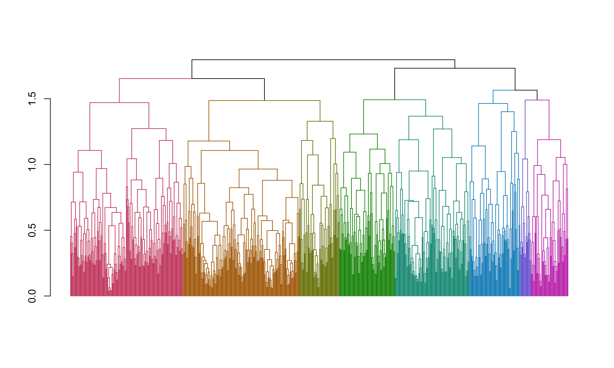
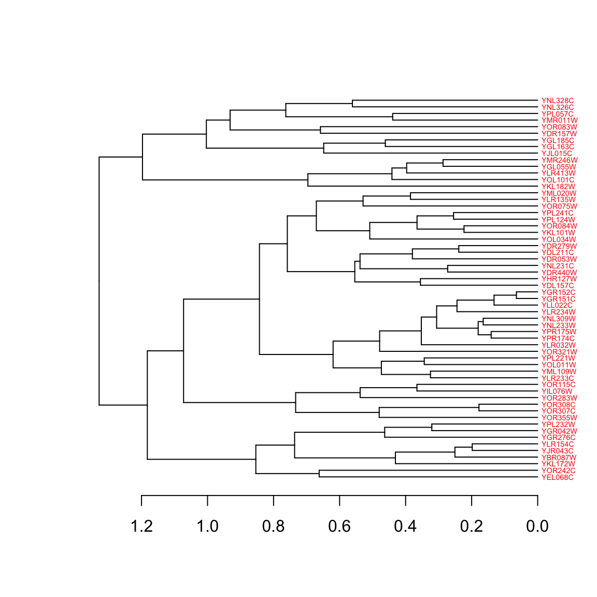

Chapter 15 Clustering in R
15.1 Libraries
library(tidyverse)
library(RColorBrewer)15.2 Data set
To illustrate clustering method, we’ll use a subset of the Spellman et al. gene expression data set we introduced in the Data Wrangling chapter. Recall that, Spellman and colleagues tried to identify all the genes in the yeast genome (>6000 genes) that exhibited oscillatory behaviors suggestive of cell cycle regulation. To do so, they measured gene expression over time, using six different types of cell cycle synchronization experiments.
Rather than working with the whole genome, we’re going to focus on clustering ~700 genes that Spellman and colleagues identified as oscillatory. This data set can be loaded from this link.
spellman <- read_csv("https://github.com/Bio723-class/example-datasets/raw/master/spellman-wide.csv")
dim(spellman)
## [1] 73 726This data is provided in a tidy “wide” format with genes in columns. The first two columns give the experiment name and the corresponding time point at which the sample was collected. Let’s confirm that the case by looking at the first few rows and columns of the data:
spellman[1:5,1:8]
## # A tibble: 5 x 8
## expt time YAL022C YAL040C YAL053W YAL067C YAR003W YAR007C
## <chr> <dbl> <dbl> <dbl> <dbl> <dbl> <dbl> <dbl>
## 1 alpha 0 -0.36 1.04 0.21 0.01 -0.3 -0.48
## 2 alpha 7 -0.42 0.19 -0.2 0.07 -0.45 -0.42
## 3 alpha 14 0.290 0.47 0.2 0.17 0.75 0.87
## 4 alpha 21 -0.14 -1.03 0.15 NA 0.37 0.92
## 5 alpha 28 -0.19 -0.63 0.38 -0.1 0.27 0.6715.3 Hierarchical Clustering in R
Hierarchical clustering in R can be carried out using the hclust() function. The method argument to hclust determines the group distance function used (single linkage, complete linkage, average, etc.).
The input to hclust() is a dissimilarity matrix. The function dist() provides some of the basic dissimilarity measures (e.g. Euclidean, Manhattan, Canberra; see method argument of dist) but you can convert an arbitrary square matrix to a distance object by applying the as.dist function to the matrix.
We’re primarily interested in clustering the variables of our data set – genes – in order to discover what sets of gene are expressed in similar patterns (motivated by the idea that genes that are expressed in a similar manner are likely regulated by the same sets of transcription factors). So we need an appropriate similarity/dissimilarity measure for variables. The correlation coefficient is a suitable measure of linear association between variables. Correlations range from 1 for perfectly correlated variables to -1 for anti-correlated variables. Uncorrelated variables have values near zero. Correlation is a measure of similarity so we’ll turn it to into a measure of dissimilarity before passing it to the as.dist function.
spellman.cor <- dplyr::select(spellman, -time, -expt) %>%
cor(use="pairwise.complete.obs")
spellman.dist <- as.dist(1 - spellman.cor)The use argument to the cor function specifies that when there are missing
values, the function should use all the available observations that have data
necessary to calculate a correlation for any given pair of genes. We then turn
the correlation into a distance measure by subtracting it from 1 (so perfectly
positively correlated variables have distance 0) and passing it to the as.dist
function.
We’re now ready to put the hclust function to use. We first generate the
hierarchical clustering, use the “complete linkage” method (see lecture slides):
spellman.tree <- hclust(spellman.dist, method="complete")Having generated the tree object, we can plot it using the multipurpose plot() function (Note that plot() is part of the base R graphics package, and hence unrelated to ggplot):
plot(spellman.tree)
Ugh - that’s an ugly plot! One major problem is that the text labels at the
bottom of the tree are too large, and they’re overlapping each other. We can
tweak that a little by changing the text size with the cex parameter.
plot(spellman.tree, cex=0.2)
That’s a little better, but we’re going to need some additional tools to wrangle this dendrogram into a more usable state.
15.4 Manipulating hierarchical clusterings with dendextend
To work with and manipulate hierarchical clusterings and to create nicer dendrograms we’re going to use a package called dendextend. Install dendextend via one of the standard package installation mechanisms before proceeding.
library(dendextend)First we’ll create a dendrogram object from our clustering tree, and use some
dendextend features to examine a few of the properties of the dendrogram.
spellman.dend <- as.dendrogram(spellman.tree) # create dendrogram objectdendextend includes a number of functions for examing the tree. For example, to examine the number of “leaves” (= # of genes we clustered) or nodes (= # of leaves + number of internal joins) in the tree we can do the following:
nleaves(spellman.dend) # number of leaves in tree
## [1] 724
nnodes(spellman.dend) # number of nodes (=leaves + joins) in tree
## [1] 144715.5 Plotting dendrograms in dendextend
The plot function for dendextend dendrogram objects (see ?plot.dendrogram) has a number of additional parameters that allows us to tweak the plot. For example, for large dendrograms it often makes sense to remove the leaf labels entirely as they will often be too small to read. This can be accomplished using the leaflab argument:
plot(spellman.dend, leaflab = "none")
15.6 Cutting dendrograms
When looking at the figure we just generated it looks like there may be four
major clusters. We’ll use the cutree function to cut the tree into four pieces
and examine the implied clustering (note that the cutree function can also be
used to cut the tree at a specified height).
clusters <- cutree(spellman.dend, k=4)
table(clusters)
## clusters
## 1 2 3 4
## 189 144 227 164When we cut the tree we got four clusters, whose size is given by the table command above. If you examine the cutree documentation (reminder: use ?cutree from the command line) you will see that it returns a vector of integers, giving the corresponding cluster to which each variable (gene) is assigned. The code below shows the cluster assignments for the first six genes.
clusters[1:6]
## YAL022C YAL040C YAL053W YAL067C YAR003W YAR007C
## 1 2 3 4 3 3Next let’s create a nicer plot that highlights each of the clusters. The
function color_branches() does essentially the same thing as cutree but it
returns information that the plot function can use to appropriately color
branches of the tree according to cluster membership.
plot(color_branches(spellman.dend, k=4),leaflab="none")
Now we’re getting somewhere! However, our clusters are still pretty big. Let’s check out the clusterings we get when we cut with eight clusters rather than four.
plot(color_branches(spellman.dend, k=8),leaflab="none") And here are the number of genes in each cluster:
clusters <- cutree(spellman.dend, k=8, order_clusters_as_data = FALSE)
table(clusters)
## clusters
## 1 2 3 4 5 6 7 8
## 164 169 58 81 108 74 16 5415.7 Looking at clusters
To further explore the clusters, let’s create a data frame that holds the information about genes and their cluster assignments:
clusters.df <- data.frame(gene = names(clusters), cluster = clusters)Having created this data frame, it’s straightforward to lookup the cluster to which a gene belongs:
clusters.df["YAL022C",]
## # A tibble: 1 x 2
## gene cluster
## <chr> <int>
## 1 YAL022C 5or to get all the names of genes in a given cluster:
cluster3.genes <- filter(clusters.df, cluster == 3)$gene
cat(as.character(cluster3.genes[1:10]), quote=FALSE,sep="\n");
## YEL068C
## YOR242C
## YKL172W
## YBR087W
## YJR043C
## YLR154C
## YGR276C
## YGR042W
## YPL232W
## YOR355W
## FALSENote the use of the cat function to print out a list of the gene names for
cluster 7, with the names separated by returns ("\n"). This is useful if you
want to cut and paste the gene names into a document, or an online analysis tool
such as various Gene Ontology (GO) browsers (we’ll talk about these in a later
class session).
15.8 Generating a heat map from a cluster
Let’s generate a heat map showing the expression of all the genes in the alpha factor experiment for the first cluster that we found above. To generate this visualization it will be convenient to work with the data in a tidy long format, so we use dplyr::gather to restructure the data first:
spellman.long <- gather(spellman, gene, expression, -time, -expt)
head(spellman.long)
## # A tibble: 6 x 4
## expt time gene expression
## <chr> <dbl> <chr> <dbl>
## 1 alpha 0 YAL022C -0.36
## 2 alpha 7 YAL022C -0.42
## 3 alpha 14 YAL022C 0.290
## 4 alpha 21 YAL022C -0.14
## 5 alpha 28 YAL022C -0.19
## 6 alpha 35 YAL022C -0.52Having restructured the data we can now generate our desired heat map:
color.scheme <- rev(brewer.pal(8,"RdBu")) # generate the color scheme to use
spellman.long %>%
filter(gene %in% cluster3.genes & expt == "alpha") %>%
ggplot(aes(x = time, y = gene)) +
geom_tile(aes(fill = expression)) +
scale_fill_gradientn(colors=color.scheme, limits = c(-2,2)) +
theme(axis.text.y = element_text(size = 6)) # set size of y axis labels
15.9 Working with sub-trees
The cutree() function illustrated above gives us the groupings implied by cutting the tree at a certain height. However, it does not explicitly return objects representing the sub-trees themselves. If you want to do computations or generate figures of the sub-trees, you’ll need to use the cut() function.
# note that I determined the height to cut at by looking at the colored dendrogram
# plot above for 8 clusters
sub.trees <- cut(spellman.dend, h = 1.48)The cut function returns multiple sub-trees designated upper and
lower. The upper tree is the tree “above” the cut, while the multiple
“lower” trees represent the disconnected sub-trees “below” the cut. For
purposes of clustering you usually are most interested in the sub-trees
(clusters) below the cut.
sub.trees$lower
## [[1]]
## 'dendrogram' with 2 branches and 164 members total, at height 1.469983
##
## [[2]]
## 'dendrogram' with 2 branches and 169 members total, at height 1.178098
##
## [[3]]
## 'dendrogram' with 2 branches and 58 members total, at height 1.32836
##
## [[4]]
## 'dendrogram' with 2 branches and 81 members total, at height 1.231597
##
## [[5]]
## 'dendrogram' with 2 branches and 108 members total, at height 1.366951
##
## [[6]]
## 'dendrogram' with 2 branches and 74 members total, at height 1.463623
##
## [[7]]
## 'dendrogram' with 2 branches and 16 members total, at height 1.041689
##
## [[8]]
## 'dendrogram' with 2 branches and 54 members total, at height 1.188419We can retrieve any particular sub-tree by indexing into the list:
cluster3.tree <- sub.trees$lower[[3]]
cluster3.tree
## 'dendrogram' with 2 branches and 58 members total, at height 1.32836
nleaves(cluster3.tree)
## [1] 5815.10 Setting dendrogram parameters in dendextend
dendextend has a generic function – set() – for changing the parameters associated with dendrograms. The basic form of the function is set(object, what, value), where object is the dendrogram you’re working with, what is a character string indicating the parameter you want to change, and value is the setting you wishing to assign to that parameter.
A full list of dendrogram parameters that can be changed is provided in the dendextend documentation.
We’ll use the set function to make a nice diagram of our cluster 3 sub-tree:
cluster3.tree %>%
set("labels_cex", 0.45) %>%
set("labels_col", "red") %>%
plot(horiz = TRUE) # plot horizontally
15.11 Combining heatmaps and dendrograms
A common visualization used in transcriptome studies is to combine dendrograms and heatmaps. To do this with a minimum of fuss we’ll use a package called “gplots” which includes a heatmap function that will also plot dendrograms next. Install “gplots” via the standard package installation mechanism.
library(gplots)The gplots function we will use is called heatmap.2. This function requires as input our data in the form of a matrix. If you provide no other information heatmap.2 will carry out clustering for you, clustering both the rows and columns of the data matrix.
However, here we want to draw a dendrogram (representing similarity among variables) we’ve already calculated, and to create a heat map just for the alpha factor data, so we need to do some pre-calculations and tweak the heatmap.2 arguments:
# subset out the alpha factor data
alpha.factor <- filter(spellman, expt == "alpha")
# create matrix after dropping time and expt columns
alpha.mtx <- as.matrix(dplyr::select(alpha.factor, -time, -expt)) # drop time, expt columns
# set row names to corresponding time points for nice plotting
row.names(alpha.mtx) <- alpha.factor$time
# transpose the matrix so genes are drawn in rows
transposed.alpha.mtx <- t(alpha.mtx)Having defined the data we want to plot in the heatmap we can now use heatmap.2 as follows
# this is a large figure, so if working in RMarkdown document I suggest specifying
# the code block header as so to make the figure large
# {r, fig.width = 8, fig.height = 8}
heatmap.2(transposed.alpha.mtx,
Rowv = cluster3.tree, # use the dendrogram previously calculated
Colv = NULL, # don't mess with my columns! (i.e. keep current ordering )
dendrogram = "row", # only draw row dendrograms
breaks = seq(-2, 2, length.out = 9), # OPTIONAL: set break points for colors
col = color.scheme, # use previously defined colors
trace = "none", density.info = "none", # remove distracting elements of plot
xlab = "Time (mins)")
15.12 K-means/K-medoids Clustering in R
The kmeans() function calculates standard k-means clusters in R. However, we’re actually going to use a related function that calculates “k-medoids” clustering. K-medoids clustering differs from k-means in that the objective function is to minimize the sum of dissimilarities from the cluster centers (“medoids”) rather then the sum of squared distances. K-medoids clustering tends to be more robust to outliers than K-means. Another advantage for our purposes is that the k-medoids algorithm, unlike the standard implementation of k-means, can accept a distance or dissimilarity matrix as input.
K-medoids clustering is implemented in the function pam() (Partitioning Around Medoids), which is found in a package called cluster that is included with the standard R installation.
library(cluster)
spellman.kmedoids <- pam(spellman.dist, 8) # create k-medoids clustering with 8 clusters
kclusters <- spellman.kmedoids$cluster
table(kclusters)
## kclusters
## 1 2 3 4 5 6 7 8
## 121 104 70 95 85 94 65 90K-medoids (or K-means) will, in general, find different clusterings than our hierarchical clustering illustrated previously. For comparison with our earlier hierarchical clustering results, lets plot the k-medoids inferred clusters back onto our earlier dendrogram.
# reorder genes so they match the dendrogram
kclusters.reordered <- kclusters[order.dendrogram(spellman.dend)]
# get branch colors so we're using the same palette
dend.colors <- unique(get_leaves_branches_attr(color_branches(spellman.dend, k=8), attr="col"))
# color the branches according to their k-means cluster assignment
plot(branches_attr_by_clusters(spellman.dend, kclusters.reordered , dend.colors),leaflab="none")
Comparing the inferred k-medoids clustering to our previous complete linkage clustering we see some clusters that are similar between the two, but there are also significant differences.
15.12.1 Heat map from k-medoids cluster
In the same manner we generated a heat map for one of the hierarchical clustering sub-trees, we can generate a similar heat map for a k-medoids cluster. Let’s examine cluster 4:
kcluster4.genes <- names(kclusters[kclusters == 4])
spellman.long %>%
filter(gene %in% kcluster4.genes & expt == "alpha") %>%
ggplot(aes(x = time, y = gene)) +
geom_tile(aes(fill = expression)) +
scale_fill_gradientn(colors=color.scheme, limits=c(-2,2)) +
labs(title = "K-medoids Clustering of Spellman et al. Data\nCluster 4") +
theme(axis.text.y = element_text(size = 6)) # set size of y axis labels
15.13 Combining clusters and correlation matrix heatmaps
How do we know if we have a sensible clustering? For example, above we illustrated how to use complete linkage clustering and the k-medoids algorithm to produce two different clusterings of the same data. We produce a result with 8 clusters for each, but there were significant differences in terms of the membership of genes in each cluster. Which one of these methods produced a “better” result for the data in hand?
There are many criteria – biological, mathematical, computational – one might apply to answer such a question, but for now let’s consider the idea that a good clustering is one that produces “natural groups” in data. In the lecture slides , I proferred the following “common sense” definition of natural groups:
- Natural Groups
Groups of objects where the similarity between objects is higher within groups than between groups.
How might we evaluate a proposed clustering with respect to this definition of natural groups? One way to do so is the examine our matrix of similarity according to the implied clusters to see if the clusters are consistent with high within group similarity and low between group similarity.
In the clustering applications we’ve looked at so far, our measure of similarity has been based on correlations. We’ll first look at the “raw” correlation matrix, unsorted with respect to the implied clusterings, and then we’ll take a look at the correlation matrix sorted by hierarchical clustering and then k-medoids clustering.
We can use the heatmap.2() function to visualize the correlation matrix.
color.scheme <- rev(brewer.pal(10,"RdBu")) # generate the color scheme to use
heatmap.2(spellman.cor,
Rowv = NULL, # don't cluster rows
Colv = NULL, # don't cluster columns
dendrogram = "none", # don't draw dendrograms
trace = "none", density.info = "none",
col = color.scheme, keysize = 1,
labRow = FALSE, labCol = FALSE,
xlab = "genes", ylab = "genes")A correlation matrix is a square symmetric matrix. The dark red line down the diagonal represents correlations of genes with themselves (i.e. perfectly correlated). Off diagonal elements range from blue (negative correlations) to gray (near zero correlations) to red (positive correlations).
15.13.1 Hierarchical clustering, visualized on correlation matrix
Now let’s re-generate the heatmap of the correlation matrix with the genes sorted by our hierarchical clustering:
heatmap.2(spellman.cor,
Rowv = ladderize(spellman.dend),
Colv = ladderize(spellman.dend),
dendrogram = "both",
revC = TRUE, # rev column order of dendrogram so conforms to natural representation
trace = "none",
density.info = "none",
col = color.scheme, key = FALSE,
labRow = FALSE, labCol = FALSE)
This reordered correlation matrix (and accompanying dendrograms) are useful for a number of purposes. First, the block structure along the diagonal indicates the correlation structure within the implied clusters. Uniformity in sign and magnitude of the on-diagongal blocks is an indicator of “within cluster” similarity. The off-diagonal blocks indicate the relationship between clusters. For example, the four “major” clusterings implied by the dendrogram are apparent in the block structure of the correlation matrix, but we also see that the two clusters at the bottom of the figure show some patches of weak or even negative correlations, suggesting that those may not be natural clusters. Also apparent are relationships between clusters – for example we see that genes in the first cluster (upper left of diagram) share strong positive correlations with many genes in the right half of the second cluster. The same relationship, though to a lesser extant, is apparent between clusters one and four.
15.13.2 K-medoids clustering visualized on the correlation matrix
Let’s do a similar sorting of the correlation matrix based on k-medoids clustering.
Since there is no dendrogram to pass to the heatmap.2 function, we’ll sort the correlation matrix ourselves by indexing on the output of the order function applied to the cluster assignments (read the order function help for more info).
# reorder correlation matrix by ordering given by clustering
kmedoids.cor <- spellman.cor[order(kclusters), order(kclusters)]Having reordered the correlation matrix by the k-clusters, we can again use the heatmap.2 function to visualize the results.
heatmap.2(kmedoids.cor, Rowv = NULL, Colv = NULL,
dendrogram = "none",
trace = "none", density.info = "none",
col = color.scheme, key = FALSE,
labRow = FALSE, labCol = FALSE)The diagram has the same interpretation as the previous figure. However, here we notice that the clusters seem to be more internally consistent, as evidence by the greater within cluster uniformity of correlations. Positive and negative relationships between clusters are also readily apparent in this figure.
15.14 Depicting the data within clusters
As a final step we’ll generate a figure depicting the time series behavior of genes in different clusters. Overlain over the individual gene expression time series, we’ll overlay the average time series for each cluster. I illustrate this with clusters generated by hierarchical clustering. This is easily adapted to clusterings generated by other methods.
Create a data frame holding cluster membership for each gene.
clusters.df <- data.frame(gene = names(kclusters),
cluster = as.factor(kclusters))For the purposes of easy plotting in ggplot, we want to combine the information about cluster assignment to the original data. However the cluster assignments and corresponding names aren’t necessarily in the same order as our original data frame. We’ll use a “left join” to combine the two data frames, matching on the “gene” column:
# do a left_join, combining the information in spellman.long
# with clusters.df (matched on gene). This effectively adds the
# cluster information as a new column to spellman.long data frame
# keeping the appropriate matches by gene name
alpha.long <-
spellman.long %>%
filter(expt == "alpha") %>%
left_join(clusters.df, by = c("gene"))Next we calculate cluster means:
# calculate the mean at each time point within each cluster
cluster.means <-
alpha.long %>%
group_by(cluster, time) %>%
summarize(mean.exp = mean(expression, na.rm = TRUE))
## `summarise()` has grouped output by 'cluster'. You can override using the `.groups` argument.And finally we plot the time series data for each cluster, with the clusters means overlain:
# draw a figure showing time varying gene expression
# in each cluster, overlain with the each clusters
# mean time series
alpha.long %>%
ggplot(aes(time, expression, group=gene)) +
geom_line(alpha=0.25) +
geom_line(aes(time, mean.exp, group=NULL,color=cluster),
data = cluster.means,
size=1.1) +
ylim(-2.5, 2.5) +
facet_wrap(~cluster, ncol=4)
To my eye, oscillatory behavior is fairly apparent in most of the clusters except cluster 7.